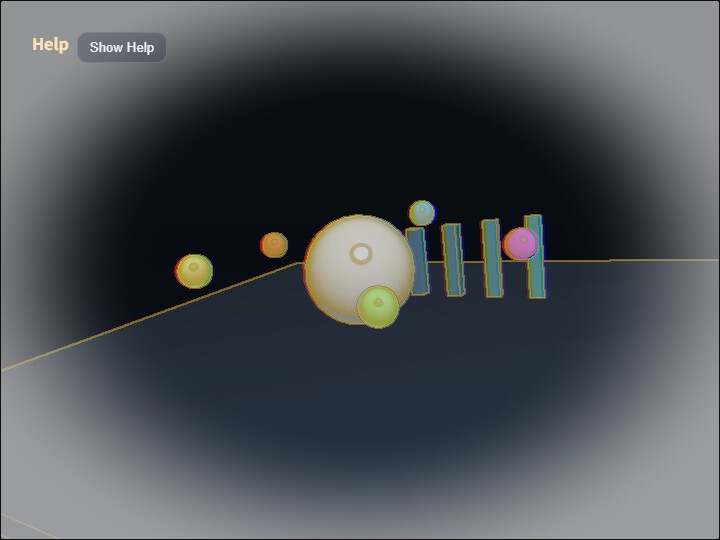

compute_postprocess
English | 日本語

Overview
- This sample takes the postprocess rendering flow from Chapter 20 and applies the effect with a compute shader instead of a fragment-shader
FullscreenPass - Without changing the
webgcore, it integrates a compute pass using only the WebGPU device obtained fromWebgAppandScreen.createRenderTarget() - The 3D scene is rendered to an offscreen
RenderTarget, then the compute shader reads that color texture and writes to a storage texture - Finally,
FullscreenPassdisplays the compute-output texture on the canvas, while the operation guide stays in the Help Panel and editable current values are collected in CommandPalette
How to Run
- Open ./compute_postprocess.html
- Use a browser with WebGPU support, and check the help panel and CommandPalette together with the sample when needed
webg Features Used
WebgApp(autoDrawScene: false): lets the sample side control the 3D-scene draw destination and the postprocess orderRenderTarget: stores the textures for scene color/depth and compute outputFullscreenPass: copies the storage texture written by the compute shader to the canvasShape / Primitive: builds a standard 3D scene for inspecting the postprocess appearancebuildHelpPanelOptions() + showOverlayPanel(): shows the operation guide in a collapsible panel at the upper left
Checkpoints
- Confirm that the 3D scene is first drawn to an offscreen target and only then displayed after going through the compute pass
- Press
Cto toggle Compute Postprocess on or off and confirm that only the postprocess changes while the scene itself stays the same - Press
Vto switch the view betweencomposite / scene / outputand compare the original scene with the compute output - When changing edge strength with
1 / 2, local-contrast sharpness with3 / 4, white vignette with5 / 6, and red-blue chromatic offset with7 / 8, confirm that the CommandPalette values and the visual changes match - Press
Mto switch the mode betweenfilm / edge / heatand confirm that the appearance can change by branching inside the same compute shader - Confirm that even when the viewport size changes, the scene target and compute output follow the screen size correctly
Controls
- Drag / arrow keys: orbit camera rotation
- Mouse wheel /
[ / ]: zoom C: toggle compute postprocess on or offV: switch display betweencomposite / scene / outputM: switch thefilm / edge / heatmode1 / 2: decrease / increase edge strength3 / 4: decrease / increase sharpness5 / 6: decrease / increase white vignette7 / 8: decrease / increase chromatic offset by 1pxSpace: pause / resume scene animationR: restore parameters to their defaults